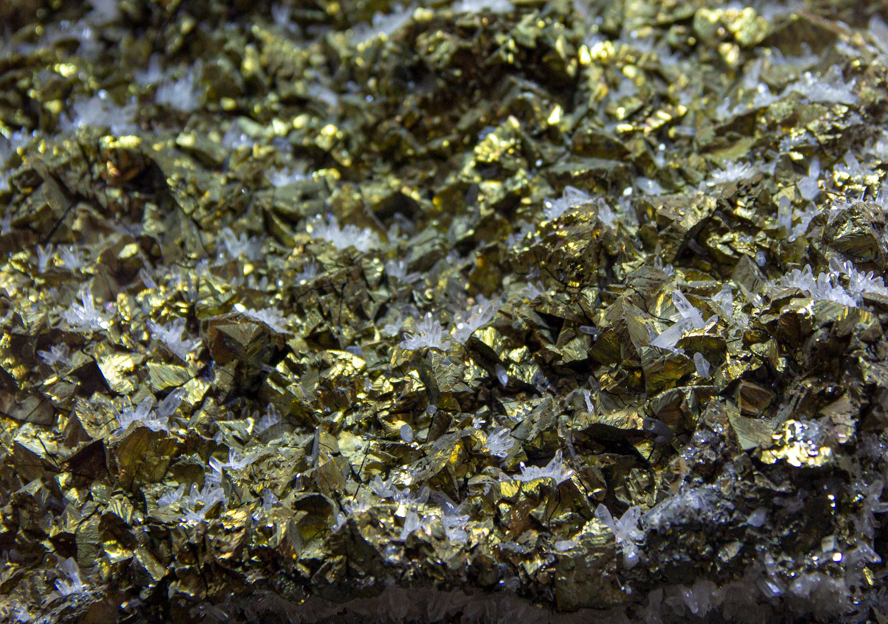

미중 기술전쟁 2026, AI→바이오 확전…韓 소재 新리스크 지도

미중 기술패권 전선이 2026년 들어 반도체·AI를 넘어 바이오·제약 소재와 양자컴퓨팅으로 확장되고 있다. 미국은 바이오안보법(BIOSECURE Act)을 통해 중국 BGI·우시앱텍의 미국 공급망 배제를 추진 중이며, 시행 시점을 2026년 내로 목표하고 있다. 동시에 중국은 2024년 안티몬(방산 합금 원료) 수출통제를 추가했고 비스무트(제약 원료·반도체 솔더) 통제 조짐도 현장에서 포착되고 있다.
중국의 전략광물 수출통제 품목이 갈륨(2023년 8월)→게르마늄(2023년 8월)→안티몬(2024년 10월)→비스무트(통제 논의 중) 순으로 확대되는 패턴을 보이고 있다. 갈륨 국제 가격은 통제 이전 대비 9배, 게르마늄은 3배 수준으로 상승했으며, 안티몬 가격도 2024년 대비 2배 이상 올랐다. 비스무트의 한국 수입 중 중국산 비중은 90%를 초과한다.
미중 AI 반도체 전선에서는 트럼프 행정부의 엔비디아·AMD 수출 허가 의무화 추진이 장기화 국면에 접어들었다. 미중 정상회담에서 반도체 합의가 재차 불발된 가운데, 중국 화웨이 Ascend 910C가 엔비디아 H100 공백 일부를 대체하며 독자 AI 칩 생태계를 구축 중이다. 한국의 AI 서버 도입 비용은 허가제 시행 시 연간 2~3조 원 추가 부담이 예상된다(업계 추산).
2026년 미중 기술전쟁의 신규 전선은 양자암호 통신 소재와 바이오 데이터 안보다. 미국은 2025년 말 EAR(수출관리규정)에 양자컴퓨팅 관련 장비·소재 통제를 강화했고, 중국은 바이오 데이터 국경 이동을 국가안보 사안으로 지정해 외국 기업의 중국 내 바이오 데이터 반출을 사실상 봉쇄하고 있다.
AI·반도체 중심이던 미중 기술전쟁이 바이오·제약 소재로 확전되면서 한국 소재 산업의 리스크 지도가 수직·수평으로 동시에 넓어지고 있다. 수직으로는 같은 광물(비스무트)이 반도체 솔더와 제약 원료에 동시 사용되기 때문에 어느 한 수요가 급증하면 다른 수요가 공급 부족에 직면하는 이중 취약성이 생긴다.
수평으로는 통제 품목이 광물→칩→바이오 데이터→양자 장비 순으로 확장되면서 한국 기업이 각 분야별로 별도의 대응 체계를 동시에 갖춰야 하는 상황이다. 소부장 구매담당자가 반도체 소재만 점검했던 기존 방식으로는 바이오·방산 소재 리스크를 포착하기 어렵다.
2026년 미중 기술전쟁의 핵심 변화는 '통제의 정밀화'다. 중국이 일본에는 갈륨 수출을 재개하면서 게르마늄은 계속 봉쇄하는 방식으로 국가별·품목별 차별 통제 전략을 구사하고 있으며, 이는 단순 '전면 봉쇄'보다 상대국의 대응 전략 수립을 더 복잡하게 만든다.
비중국 전략광물 공급업체가 단기 수혜를 받는다. 볼리비아·캐나다산 비스무트, 호주산 안티몬 공급사들은 중국 통제 리스크가 가시화될 때마다 가격 프리미엄을 수취하는 구조다. 국내에서는 고려아연이 아연 제련 부산물에서 비스무트·안티몬을 회수하는 공정을 보유하고 있어 통제 확산 시 수혜 범위가 갈륨·게르마늄에서 이 소재들로 확대된다.
한국 CDMO(위탁개발생산) 기업이 바이오 전선 확전의 최대 반사이익을 얻는다. 우시앱텍·BGI 배제로 발생하는 글로벌 CDMO 공백을 삼성바이오로직스·셀트리온·SK바이오사이언스가 흡수할 수 있다. 현재 한국의 글로벌 CDMO 시장 점유율은 약 8%(2024년 기준)이며 2027년 12% 목표를 제시하고 있다.
중국산 제약 원료 의존 기업이 직격탄을 맞는다. 국내 제약사 50여 개가 위장약·방사선 조영제 원료로 중국산 비스무트 서브갈레이트·서브살리실레이트를 수입하고 있으며, 통제 시 단기 대체처가 없어 원가 상승이 불가피하다. 비스무트 비중국 조달처 발굴에는 최소 12~18개월의 공급사 검증 기간이 필요하다.
AI 서버 구축을 추진하는 국내 클라우드·데이터센터 기업도 타격을 받는다. 엔비디아 수출허가제 장기화 시 KT클라우드, 네이버클라우드 등의 AI 가속기 조달 비용이 상승하고 설치 일정이 지연된다. 현재 국내 AI 데이터센터 투자 계획은 2025~2027년 약 30조 원 규모인데, 칩 조달 불확실성이 투자 집행 속도를 늦출 수 있다.
전략가는 미중 기술전쟁을 'AI 대 AI' 단선 구도로 보지 말고, 소재→칩→바이오→양자 순으로 확전되는 다층 전선으로 재설계해야 한다. 각 분야별 중국 의존도를 품목 단위로 점검하는 것이 선결 과제이며, 특히 이중용도 소재(반도체와 제약 원료를 겸하는 비스무트·안티몬)는 부서 간 사일로를 넘어 통합 리스크 관리 체계에서 관리해야 한다.
투자자는 2026~2027년 고성장 구간으로 진입하는 두 영역을 선별해야 한다. 첫째는 비중국 전략광물 공급망을 확보한 비철금속 제련사(고려아연·영풍), 둘째는 우시앱텍 배제 수혜를 받는 한국 CDMO 3사(삼성바이오로직스·셀트리온·SK바이오사이언스)다. 이들의 신규 수주 데이터를 분기별로 추적하되, 미중 기술전쟁 전선 이동이 촉매가 되는 시점을 진입 타이밍으로 삼을 것.
실제 조달 현장에서는 — 비스무트처럼 반도체 솔더 합금과 제약 원료를 동시에 공급하는 이중용도 소재는 어느 한 수요가 급등하는 순간 다른 용도로의 공급이 즉각 타격받는 구조다. 공급자 입장에서 이미 이 소재의 분기별 예약 물량이 채워지는 속도가 빨라지고 있으며, 6개월 선물 계약 없이 현물 시장만 의존하는 구매 방식은 2027년 이전에 반드시 교정해야 한다.
이 포스팅은 쿠팡 파트너스 활동의 일환으로 수수료를 제공받습니다.